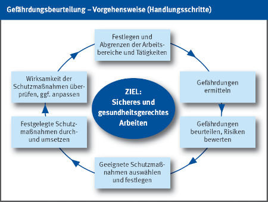

Die Methode der Gefährdungsbeurteilung

Der Gefährdungsbeurteilung liegen folgende systematische Schritte zugrunde:
● Festlegen/Abgrenzen der zu untersuchenden Arbeitsbereiche,
z. B. Betriebsorganisation, Objekt, Baustelle, Werkstatt, und der dort auszuführenden Tätigkeiten.
● Ermitteln von Gefährdungen
- objekt-/baustellenunabhängig, z. B. Einsatz nicht regelmäßig
geprüfter elektrischer Betriebsmittel, unzureichende Unterweisung der Beschäftigten.
- objekt-/baustellenspezifisch (systematisch) nach Gewerken und Tätigkeit,
z. B. Mauerarbeiten, Erdbauarbeiten, Reinigungsarbeiten.
● Beurteilen der Gefährdungen, z. B. Risiko eines Absturzes,
Risiko verschüttet zu werden
● Abschätzen und bewerten des Risikos anhand vorgegebener
Schutzziele, z. B. in Vorschriften und Regeln, bzw. nach Ermittlung
mit geeigneten Methoden.
● Geeignete Schutzmaßnahmen auswählen und festlegen,
wo erforderlich/notwendig, z. B. Seitenschutz, Verbau, Persönliche Schutzausrüstung (PSA).
● Festgelegte Schutzmaßnahmen durch- und umsetzen, z. B. Anbringen
des Seitenschutzes, Einbau von Grabenverbauelementen, Bestimmen des Verantwortlichen,
Benutzen der persönlichen Schutzausrüstungen.
● Wirksamkeit der Schutzmaßnahmen überprüfen und ggf. anpassen.